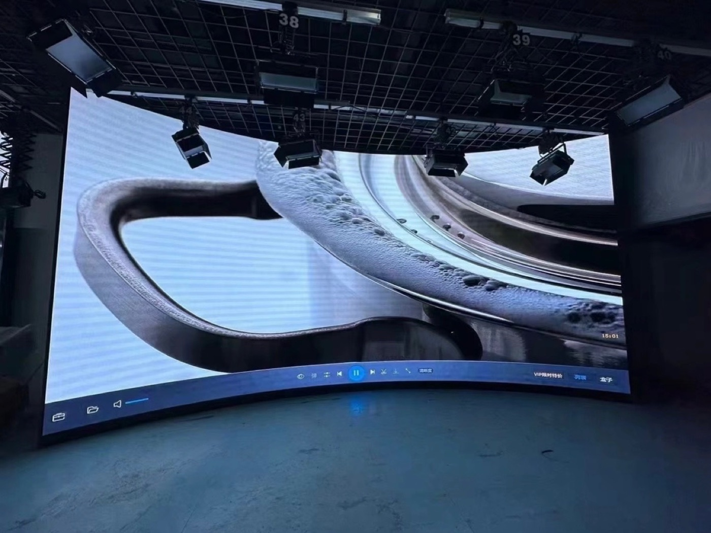

By David
An experience center is the one room where the company shows itself, and the screen is usually the thing people look at while they are shown. That changes what matters: not maximum brightness, which a dim interior never needs, but colour accuracy, seamlessness and whether the screen looks right the moment a customer walks in.
This guide covers what an experience center demands of an LED wall, and where an enterprise buyer should focus.
A meeting room screen serves content that people are working with. An experience center screen serves the impression the room creates.
That means the display is judged in seconds, from a standing visitor's distance, under lighting designed for atmosphere rather than for working. Small imperfections that would be invisible in an office are visible here, because the room exists to be looked at.
Indoors, brightness is rarely the constraint. The constraint is whether the colours are right.
Brand colours have to read correctly, and they have to stay consistent across the whole wall so that no section drifts warmer or cooler than its neighbour. On a large surface the eye catches that drift even when no single point looks wrong. This is why calibration and consistency belong in the specification rather than being left as an afterthought.
Experience centers often want large or curved forms, and the construction choice follows the viewing distance rather than the budget alone.
A fine-pitch panel array reads as a single surface at the distances a room is used from, while tiling allows larger sizes and curved geometry at the cost of introducing seams. Drawn into a curved wall, an LED surface can also follow an architectural form that a flat panel cannot, which is why the room's geometry and the screen's pitch should be decided together.

The most common failure mode for a flagship screen is that nobody owns its content.
If the marketing team produces a film for the launch and there is no process to update it, the wall shows the same thing for two years and the room loses the effect it was built for. Where the screen has a defined content owner, a format and a refresh rhythm, it stays alive — and that is usually a brand decision rather than an AV one.
A supplier that understands the content platform and can confirm compatibility is more useful to the project than one that treats the wall as a standalone product.
An experience center usually has three stakeholders, and they want different things.
Brand or marketing owns the look and often has the strongest opinion on the display. Facilities owns the space, the structure and the finish. IT or AV owns how it runs. Because the room is for demonstrating to outsiders, the brand side tends to drive the appearance decision while the others set the constraints.
For a flagship room, the technical package is as much about confidence as about numbers.
Colour and calibration data, the viewing geometry the pitch was chosen for, dimensioned drawings for the architectural finish, and clear warranty and service terms. The buyer is protecting a brand impression, so anything that looks uncertain in the documentation undermines the proposal.
Our factory runs 8 IC production lines and 7 LED SMT production lines under ISO 9001:2015, with CE, FCC and RoHS certification, a 15 to 20 working day lead time and a three-year warranty. For experience center walls the usual match is the RH-PRO fine-pitch COB for its colour consistency and redundancy, and the COB CV-PRO series for standard fine-pitch interiors.
For the buying process behind it, see how enterprises buy LED displays.
Send your specifications for a detailed LED display price quote with UL/ETL certification.
Request Price Quote Chat on WhatsApp